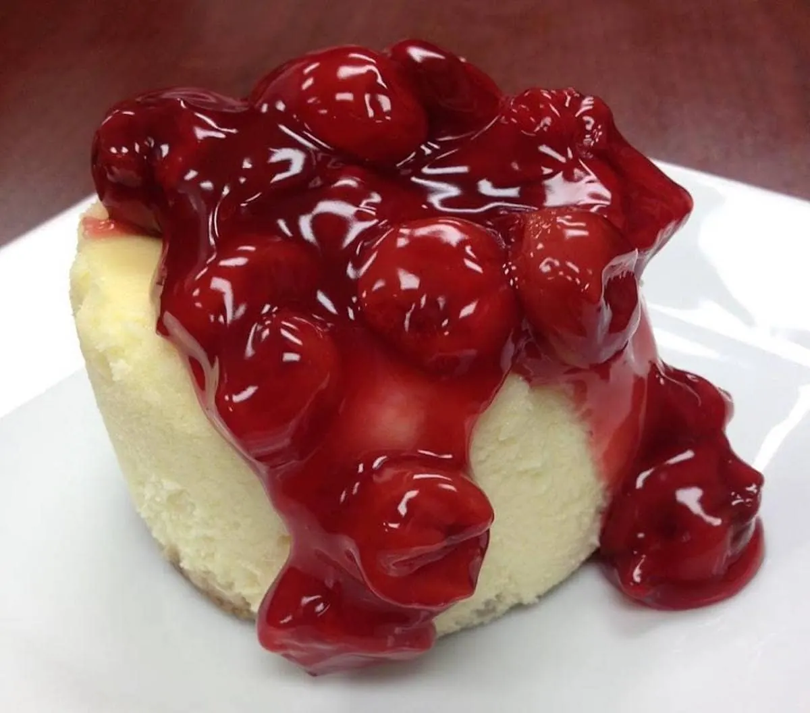
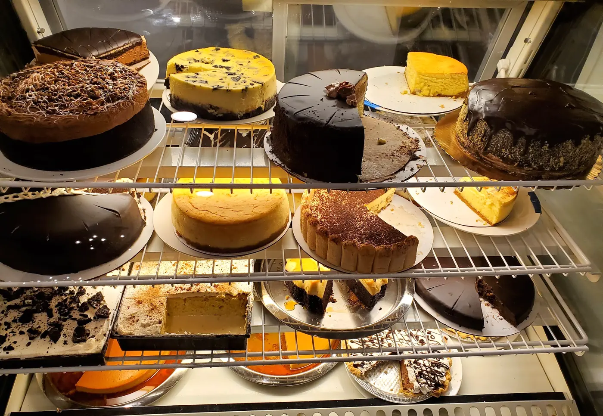
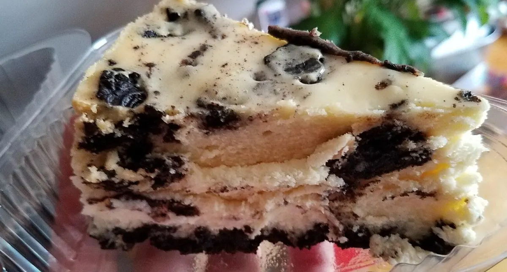

Concept preview · Bloomfield
Come for the cheesecake.
Stay for Italian-American dinner or weekend brunch at 71 Washington Street. Every cake is homemade, made fresh to order.

5 pm–9 pm
Sat 10:30–4 · Sun 10–3
48 hours’ notice for whole cakes
Bloomfield, NJ 07003

From the kitchen
Comfort food, done properly.
Pastas, cutlets, and slow-braised favorites at dinner. Pancakes, waffles, and a brunch burger on the weekend. Start here.
Chicken Parm Vodka
Chicken parmigiana, house vodka sauce, and fresh mozzarella.
Cavatelli with Sausage & Broccoli Rabe
Hot & sweet Italian sausage, garlic, and pecorino.
Fettucini Vodka & Braised Short Rib
Braised beef short rib, house vodka sauce, and ricotta.
Prices and availability may change.
The cheesecake case
Baked fresh, to order.
Every cake is homemade. Have a slice with coffee, or order a whole one for the table. Please allow 48 hours.


Choose a flavor
A few to start with. Pick one to see sizes and prices.
Price depends on flavor. Call 973-415-8885 to place a cake order.
Reviews
4.7 stars. 761 reviews.
“The food was fantastic and the cheesecake for dessert outstanding!”
“I tried the chicken and waffles and it was cooked perfectly. I love the apple cider donut cheesecake also!”
“Anthony and his staff always deliver quality food and service!”
Catering
Bring Anthony’s to your table.
Arancini, chicken parmigiana, baked ziti, meatballs and more, by the tray.
Half trays serve 10 and full trays serve 20. Call to plan your menu, pickup and availability.

Visit
71 Washington Street, Bloomfield.
71 Washington StreetBloomfield, NJ 07003
For orders, reservations, and catering, please call.
Hours
- Thursday–Friday
- 11 am–4 pm
5 pm–9 pm - Saturday
- 10:30 am–4 pm
5 pm–9 pm - Sunday
- 10 am–3 pm
- Monday–Wednesday
- Closed
Closed between services from 4–5 pm, Thursday–Saturday. Please call for holiday and brunch service hours.
Hours from anthonyscheesecake.com, checked October 30, 2026.
Order ahead · book a table
A whole cake, a few trays, or a table.
Tell Anthony’s what you need and when, and they call you back to confirm. Whole cheesecakes need 48 hours’ notice; Anthony’s confirms the pickup time with you.
Preview only: this form sends nothing.